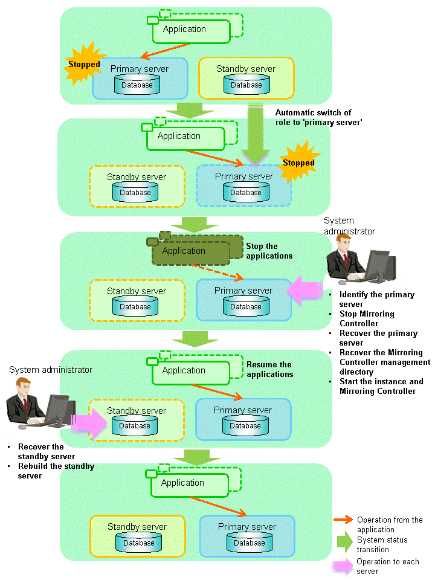

This section explains what happens when all database servers or instances on the database server have stopped, so jobs cannot continue.
See
Recovery to database multiplexing mode
Refer to "4.1.1.2 Rebuild the Standby Server" and "4.1.1.3 Failback of the Primary Server" for information on recovery to database multiplexing mode.
The flow of these recovery operations is shown in the figure below.
Figure 4.3 Flow of operations

Perform the following procedure:
Stop the applications
Stop the applications from running.
Identify the primary server
Use one of the following methods to identify the primary server that was running before the servers or instances stopped:
Refer to the system log on each server and identify the server where the following message was output.
Message:
MirroringControllerOpen[30017]: LOG: promotion processing completed (MCA00062)
On each server, execute the mc_ctl command in status mode to search the servers for which "none(inactivated primary)" is displayed.
Stop Mirroring Controller on the primary server
Execute the mc_ctl command in stop mode on the primary server.
If automatic start and stop of Mirroring Controller has been configured using systemd, do not use the mc_ctl command, but instead use the systemctl command. Refer to "2.12 Setting Automatic Start and Stop of Mirroring Controller and Multiplexed Instances" for details.
Example)
$ mc_ctl stop -M /mcdir/inst1
Note
Forcibly stopping Mirroring Controller
If Mirroring Controller does not stop, specify the -e option in the stop mode of the mc_ctl command and then execute the command.
Example)
$ mc_ctl stop -M /mcdir/inst1 -e
Recover the primary server
First, refer to "Actions when an Error Occurs" in the Operation Guide, and then identify the cause of the error and perform recovery.
Next, recover the primary server using the recovery method that uses the pgx_rcvall command based on the backup data.
If the backup operation was performed using the pgx_dmpall command based on the instructions in "2.14.2 Database Backup Operation", perform the following procedure for the recovery:
Perform the following operations on both the primary server and the standby server, and check the server containing the backup data and the archive log that show the latest date.
Execute the pgx_rcvall command with the -l option specified and identify the backup data that shows the latest date.
Identify the archive log that shows the latest date, as shown below.
Example)
$ ls -ltr backupDataStorageDir/*_walIf the latest backup data exists on the standby server, copy *1 the backup data and overwrite *2 it to each backup storage destination directory on the primary server.
If the latest archive log and transaction log file exist on the standby server, copy *1 the archive log and overwrite *2 it to the backup storage destination directory on the primary server.
Execute the pgx_rcvall command on the primary server, specifying the backup storage destination directory of the primary server.
Note
*1: The backup data may contain a symbolic link, so copy the backup data so that the symbolic link is not converted to an ordinary file (with the tar command, for example).
*2: If you can save a copy of the backup storage destination directory, do so without overwriting it.
See
Refer to "Actions when an Error Occurs" in the Operation Guide for information on the pgx_rcvall command.
Recover the Mirroring Controller management directory
Copy the files in the Mirroring Controller management directory from the backup data, and then perform the recovery.
Start the primary server instance and Mirroring Controller
As the instance administrator user, execute the mc_ctl command in start mode.
Example)
$ mc_ctl start -M /mcdir/inst1
As the instance administrator user, execute the mc_ctl command in start mode with the -F option specified.
Example)
$ mc_ctl start -M /mcdir/inst1 -F
Point
After Mirroring Controller is started, automatic switch/disconnection can be enabled or disabled using the enable-failover or disable-failover mode of the mc_ctl command.
Resume applications
Resume the applications.
Stop Mirroring Controller on the standby server
Execute the mc_ctl command in stop mode on the standby server.
If automatic start and stop of Mirroring Controller has been configured using systemd, do not use the mc_ctl command, but instead use the systemctl command. Refer to "2.12 Setting Automatic Start and Stop of Mirroring Controller and Multiplexed Instances" for details.
Example)
$ mc_ctl stop -M /mcdir/inst1
Recover the standby server
Refer to "2.5.2 Creating, Setting, and Registering the Standby Server Instance", and then recover (set up) the standby server from the primary server.
Rebuild the standby server
On the standby server, start Mirroring Controller and the instance.
As the instance administrator user, execute the mc_ctl command in start mode.
Example)
$ mc_ctl start -M /mcdir/inst1
As the instance administrator user, execute the mc_ctl command in start mode with the -F option specified.
Example)
$ mc_ctl start -M /mcdir/inst1 -F
Point
After Mirroring Controller is started, automatic switch/disconnection can be enabled or disabled using the enable-failover or disable-failover mode of the mc_ctl command.